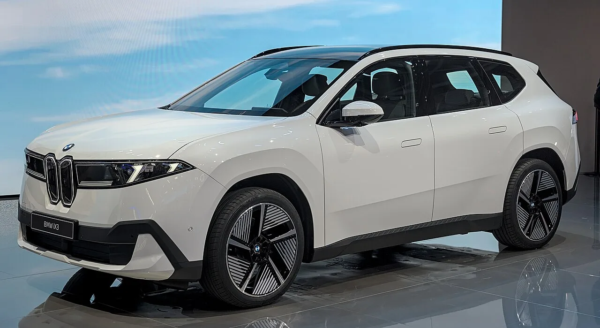
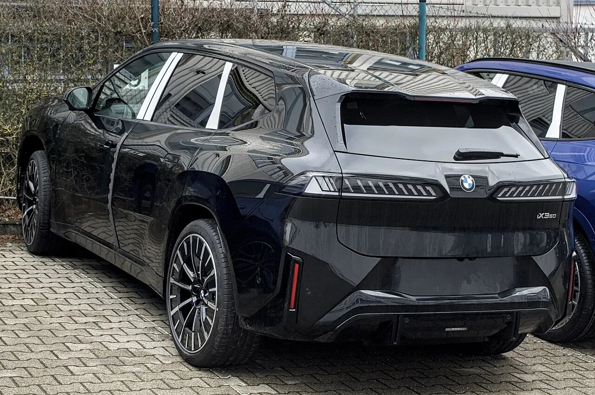

▲ 노이에 클라세 iX3. 중국 전용으로 휠베이스를 늘린 파생형이 따로 나온다 ⓒ Wikimedia Commons
BMW가 중국에서만 파는 iX3를 따로 만들었습니다.
휠베이스를 108mm 늘려 3,005mm로 키웠고, 배터리는 약 108kWh입니다. CLTC 기준 900km 이상을 갑니다.
가격은 26만9,900위안(약 3만9,800달러)부터입니다. 그런데 이 차는 한국에서 살 수 없습니다.
1. 제원부터
| 트림 | 가격 | 구동 |
|---|---|---|
| iX3 30L | 269,900위안 (약 39,800달러) | — |
| iX3 40L xDrive | 299,900위안 | 사륜 |
| iX3 50L xDrive | 339,900위안 | 사륜 |
| 전장 × 전폭 × 전고 | 4,885 × 1,895 × 1,635mm |
|---|---|
| 휠베이스 | 3,005mm (표준형 대비 +108mm) |
| 배터리 | 약 108kWh, 대형 원통형 셀 |
| 전비 | 15.1kWh/100km |
| 주행거리 | CLTC 900km 이상 (최상위) |
| 충전 | 10분에 약 400km, 10→80% 21분 |
| 최고출력 | 듀얼모터 351kW(477마력) |
| 시스템 | 800V, 6세대 BMW eDrive |
| 인도 | 11월 |
2. 108mm를 늘리는 이유
중국 시장에서 롱휠베이스는 프리미엄의 문법입니다. BMW 5시리즈, 벤츠 E클래스, 아우디 A6 모두 중국 전용 롱휠베이스 버전이 따로 있습니다.
| 영역 | 변화 |
|---|---|
| 2열 레그룸 | 늘어난 길이의 대부분이 뒷좌석으로 간다 |
| 배터리 탑재 공간 | 바닥 면적이 넓어져 큰 팩을 넣기 쉬워진다 |
| 직진 안정성 | 유리해진다 |
| 회전반경 | 불리해진다 |
| 차체 강성 | 보강이 필요해 중량이 는다 |
전기차에서는 두 번째 항목이 특히 큽니다. 배터리는 바닥에 깔리므로, 휠베이스가 길어지면 그만큼 셀을 더 넣을 수 있습니다. 108kWh라는 용량과 900km라는 주행거리가 여기서 나옵니다.

▲ 늘어난 108mm의 대부분은 2열 공간과 배터리 탑재 면적으로 간다
3. 중국 전용이 된 진짜 이유
휠베이스만이 아닙니다. 이 차에 들어간 항목들이 다른 시장에 그대로 옮겨갈 수 없는 성격입니다.
| 영역 | 내용 | 타 시장 이식 가능성 |
|---|---|---|
| 주행보조 | 모멘타 | 낮다 — 지역 데이터 기반 |
| 연결성 | 화웨이 HiCar + CarPlay | HiCar는 중국 중심 |
| 음성·AI | 알리바바, 딥시크 | 낮다 |
| 도어 핸들 | 현지 선호 형태 | 가능하지만 무의미 |
| 차체 | 롱휠베이스 | 가능하나 수요 없음 |
독일 브랜드가 중국 회사의 자율주행 소프트웨어와 AI를 얹었다는 점이 이 차의 핵심입니다. 유럽 브랜드가 자체 시스템만으로는 중국 소비자의 기대치를 맞추지 못한다는 판단이 깔려 있습니다.
4. 한국에 오는 iX3와 무엇이 다른가
| 항목 | 표준형(글로벌) | 롱휠베이스(중국) |
|---|---|---|
| 휠베이스 | 기준 | +108mm (3,005mm) |
| 배터리 | 글로벌 사양 | 약 108kWh |
| 주행거리 기준 | WLTP·국내 인증 | CLTC |
| 주행보조 | BMW 자체 | 모멘타 |
| 판매 지역 | 글로벌 | 중국 한정 |
주행거리 숫자를 직접 비교하면 안 됩니다. CLTC는 중국 기준으로, 국내 산업부 인증이나 WLTP보다 낙관적으로 나옵니다. 900km라는 수치를 국내 기준으로 환산하면 상당히 줄어듭니다.
국내에서 iX3는 이미 출고 대기가 길게 걸리는 모델입니다. 롱휠베이스 파생형이 국내에 들어올 계획은 현재로서는 없습니다.

▲ 국내에는 표준형만 들어오며, 롱휠베이스 도입 계획은 없다
5. 이 차가 보여주는 흐름
독일 프리미엄 브랜드의 중국 전략이 한 단계 넘어갔습니다.
| 단계 | 방식 |
|---|---|
| 1단계 | 글로벌 모델을 그대로 수입 |
| 2단계 | 롱휠베이스 파생형 현지 생산 |
| 3단계 | 소프트웨어·AI까지 현지 기업 것으로 교체 |
3단계는 브랜드에 양날입니다. 판매에는 유리하지만, 차의 경험을 규정하는 부분을 외부에 넘긴다는 뜻이기도 합니다. 같은 화웨이·모멘타 시스템을 쓰는 브랜드가 늘어날수록 차별화 여지는 좁아집니다.

▲ 노이에 클라세는 BMW의 차세대 전동화 플랫폼이다
6. 정리
BMW가 중국 전용 롱휠베이스 노이에 클라세 iX3의 사전판매를 시작했습니다. 26만9,900위안(약 3만9,800달러)부터이며 상위 트림은 29만9,900위안, 33만9,900위안입니다.
휠베이스는 3,005mm로 표준형보다 108mm 길고, 배터리는 약 108kWh입니다. CLTC 900km 이상, 10→80% 21분, 최상위 듀얼모터 351kW(477마력), 800V 시스템입니다.
중국 전용인 이유는 차체보다 소프트웨어에 있습니다. 모멘타 주행보조, 화웨이 HiCar, 알리바바·딥시크 AI가 들어갑니다. 인도는 11월 시작이며, 국내 도입 계획은 없습니다.